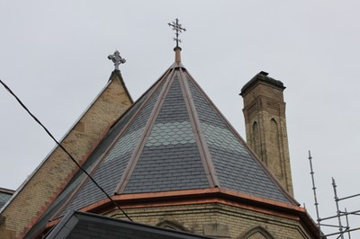

Pizarra [RMT4]
Baldozas de pizarra, una roca foliada, metamórfica derivda de una roca sedimentaria del tipo esquisto compuesta por arcilla de cenizas volcánicas. Estas baldosas son usualmente delgadas y de color gris oscuro. Superpuestas y usualmente pegadas a listones de madera.

Baldozas de techo de pizarra, Canada (Ojdrovic Engineering)